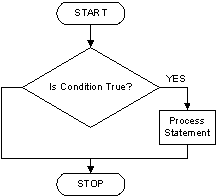

Javascript
Definition
JavaScript often abbreviated as JS, is a
high-level,interpretedprogramming language. It is a language which is also characterized asdynamic, >weakly typed,prototype-basedandmulti-paradigm.
As a
multi-paradigmlanguage, JavaScript supportsevent-driven,functional, andimperative (including object-oriented and prototype-based)> programming styles.
Initially only implemented client-side in web browsers, JavaScript enginesare now embedded in many other types of host software, including server-side in web servers and databases, and in non-web programs such as word processors and PDF software, and in runtime environments that make JavaScript viable for writing mobile and desktop applications, including desktop widgets.
- This definition comes from Wikipedia - JavaScript document
- Over this course we'll try to figure out what this means and how it works
- By the end of the programing section we should be able to read this definition again and understand it
JS History
- It's important to know the language's history to understand where it comes from and where it's going
- Read auth0 - A brief history of JavaScript
- Watch & Read TXJS 2011 A6 – Brendan Eich – Ecma TC39: The Good, The Bad, and The Ugly.
- Watch Tyler McGinnis - Computing Conversations with Brendan Eich
- Watch ECMAScript, TC39, and the History of JavaScript
- Watch How to fix the web | Brendan Eich | TEDxVienna
- Watch Brendan Eich on JavaScript at 17 - O'Reilly Fluent 2012
- Watch ECMAScript Harmony: Rise of the Compilers - Brendan Eich keynote
JS Environments
- JavaScript now runs Client and Server side
- Using a Web Browser is one of the easiest way to execute JS Client side
- Using Node.js we can execute JS Server side
- JavaScript is no longer a scripting language to create interactive browser animations
Client Side - Browser
- Open Chrome
- Open Devtools
- Select the console tab inside Devtools
- Write the following code and press enter to execute it:
- Now run the following code:
Node.js - Server Side
Node.js® is a JavaScript runtime built on Chrome's V8 JavaScript engine. Node.js uses an event-driven, non-blocking I/O model that makes it lightweight and efficient. Node.js' package ecosystem, npm, is the largest ecosystem of open source libraries in the world.
It was created by Ryan Dahl in 2009
We'll use Node.js from now on to learn the language and run our JavaScript exercises
Once we know the language core concepts we'll learn about the Browsers API's
After installing Node.js open a terminal window and run the following command:
- Also check that you have npm installed too:
- Now that we know that we have installed Node.js & npm we can use it
- Execute the following command:
- It looks like nothing happened but in reality we are executing Node.js JavaScript console
- The > symbol means that we opened the Node.js console and it's waiting for us to input JS code
- Now we can write JS code and execute it the same way we did using the browser
- This console is called
REPL("Read-Eval-Print-Loop")
Using Node.js REPL
- Open your terminal
- Execute the
nodecommand - If you do not see the > symbol (and you are using Windows) try
winpty nodeinstead - Write the following sentence once you see the > symbol:
- Press the enter key to see the following result:
- Press CTRL + C to quit
- You'll see the following message:
- So you need to press CTRL + C twice to exit
- In this exercise we added two numbers and Node.js output the result
- It's nice to be able to try code using Node.js console but for longer programs it's better to use a JS files
- To execute a JS program we'll use the node command and the name of the file that we want to execute
- Once we execute this command Node.js will read and interpretate our JS code
- We use the
.jsextension for our JavaScript code
Using a Node.js file
- Create a folder with the name
js - Create a new file
index.jsinside the js folder - Write the following code into the index.js file
- Open the console and change directory to the
jsfolder - Execute the program using the node command:
- Check out the output!!
- Don't worry if you don't see an output, Node.js executes our code but it's only adding both values together
- To show the result as output we need to use the
console.log()object and method - The
log()method accepts any value to show as output - Now add
console.logand execute the program again
- Now we see the expected output!!!
Conclusion
- Browser and Node.js internaly use the V8 JavaScript engine to run JavaScript code
- We can use the Browser or Node.js console to try out JavaScript code
- V8 is maintained by Google
- We'll use browser to run JavaScript client side and Node.js for Server side
Variables declaration & assignment operators
Variables declaration
- Many times when coding we need to store a value to interact with it
- This value is stored in our computer memory
- As this values might change over time we'll call this memory position a
variable - We can assign variables a
nameto identify them - It's a good practice to use descriptive names to define our variables
- If we use names like a, b, foo they don't add any context about what we're coding
- We can then define that variables are named memory positions where we can assign different values and override them when needed
ES5
- To define a variable in JavaScript we just need a variable name
- The variable statement var declares a variable, optionally initializing it to a value
- Also end each statement with
; - MDN var doc
Example:
- For example we can define name and age variables to use in our program
Example:
- Not using var is a bad coding practice
- To avoid unexpected errors use var to declare your variables
- Variable names must start with a letter
- Use descriptive variable names to keep your code smelling nice
- In JavaScript it's common to use camel case to define variable names
- In camel case the first word is written in lower case and the rest of the words start with a capitalize letter
Example:
Practice
Assignment operator
- Once we defined a variable name we can assign a value
- As we have a memory space reserved we can store a value
- The = assigns a value from right to left
Example:
- We can define all the variables first and then assign the values:
- Variables in JS can be of different types
Example:
Practice
- Also we can declare all variables using a single line:
Example:
Practice
- We can declare a variable and assign a value in the same line:
- Multiple assignment doesn't work in JavaScript (only one variable and one value)
Example:
Practice
- Using
console.log()we can output the variable value
Example: index.js (filename)
Execute the program using node.js:
Practice
- After executing the program we should see pablo & 20 as output
console.log()accepts multiple comma separated values- We can show a message and the variable value
Example: index.js (filename)
Execute the program using node.js:
- Now our output looks like: name: Pablo and age: 20
- This is an easy way to debug our variable values
Practice
ES6
- In version 6 of the language we can use let to define variables
- This statement declares a block scope local variable, optionally initializing it to a value
- Using let will help us scope our variables in a better way
- MDN let doc
Example:
Practice
- When the value of a variable is always the same we can define it as a constant
- In ES6 we can declare constants using the reserved word const
Example:
Practice
- We'll get an error if we try to change a constant value
Example:
Practice
var vs let & const
- Medium - Eric Elliot - JavaScript ES6 var, let or const
- StackOverflow - Difference between using let and var
- JS Tips - Keyword var vs let
Memory Management
- If you're wondering how JavaScript memory and variables work you can read the following guide to know more about it and JS Garbage collection
- MDN Memory management doc
Data types
In JavaScript we can use different types of values to represent different things
Example:
var name = "Pablo";var age = 20;console.log("name: ", name);console.log("age: ", age);In this example we use different types of values:
- For the name variable we use a value between quotes
- For age we use a number
JavaScript has the following different base types that we can use:
- string: this type is used to represent textual data
- number: there is only one number type the
double-precision 64-bit binary format IEEE 754 value. There is no specific type for integers. In addition to being able to represent floating-point numbers, the number type has three symbolic values: +Infinity, -Infinity, and NaN (not-a-number) - boolean: represents a logical entity and can have two values:
true or false - undefined: A variable that has not been assigned a value has the value
undefined. - null: this type has exactly one value:
null. It represents the intentional absence of any object value
As programmers it's going to be our responsibility to choose the right data type for each variable depending the type of value that we need
The operations that we'll be able to do are going to be related to the data type we choose
There exists many more types of values in JavaScript (and we can even create our own) but these are the primitive ones
A primitive (primitive value, primitive data type) is data that is not an object and has no methods
String
String represents a text value, we can use them for names, last name, address, etc
String values are enclosed between single or double quotes
By default we use single quotes for strings but there are some special cases
Example:
let firstname = "Juan";let lastname = "Perez";console.log(firstname);console.log(lastname);In this example we defined two variables (firstname and lastname) and assigned them string values ('Juan', 'Perez')
We can also use this type of value for messages
Example:
let message = "Welcome to JavaScript!!!";console.log(message);We can use primitives without having them assigned to a variable
Example:
console.log("Welcome to JavaScript!!!");In this example we use a literal string as
console.log()parameter
Practice
String concatenation
The
+operator allows us to concat two or more strings togetherExample:
let name = "Juan";let space = " ";let lastname = "Perez";console.log(name + space + lastname);In this example we concat all values using the
+operatorWe might not need to use a variable for the space and we can use a string literal instead
Example:
let name = "Juan";let lastname = "Perez";console.log(name + " " + lastname);In this example we see how to use a literal value without being assigned to a variable
Practice
Template literals
In ES6 we have
template literalsthat will help us write better string templatesTo write a template literal we use `` (back-tick)
Then we use the following syntax to add template values
${variable}Once the code gets executed the JavaScript engine will replace the variable value inside the string one
Take a look at the following example to better understand this concept
Example:
var name = "Pedro";var template = `Welcome ${name} to this great site`;console.log(template);In this example we defined a name variable and assigned the Pedro value
Then we create a template variable with a message and the name variable
Once we execute this code we'll get
Welcome Pedro to this great siteWe can add all the variables that we need to a template
Templates can be multiline
Example:
let mom = "Marta";let dad = "Martín";let template = `My mother\'s name is ${mom} & my dad\'s name is ${dad}`;console.log(template);We'll get as result: My mother's name is Marta & my dad's name is Martín
We will explain the backslash quote thing later ;)
Using string concatenation we can get the same result
Example:
let mom = "Marta";let dad = "Martín";let message = "My mother's name is " + mom + " & my dad's name is " + dad;console.log(message);We can get the same result using templates or string concat
Using templates looks like an easier way to do it!!
Practice
Single or double quotes
In JavaScript we can choose between single or double quotes
There're some cases where we need to use one or the other
Example:
let text = 'text using "double quotes"';let otherText = "text using 'simple quotes'";console.log(text);console.log(otherText);In this case single or double quotes are part of the value
When using quotes as part of the value we have to choose between escaping the quotes or just using the quote type that is not part of the content:
- Use double quotes if the text has single quote content
- Use singe quotes if the text has double quote content
Practice
Numbers
JavaScript also supports number type
This type of value doesn't use quotes
Example:
let age = 38;let capacity = 50;console.log(age);console.log(capacity);
Practice
A common mistake is to code numbers as strings
Example:
let age = 38;let capacity = "50";In this example we have two variables that it looks like we are assigning number values. Age has a number type and capacity has a string value with the representation of a number. Having different types allows us to do different types of operations, for example we can add or subtract numbers but not strings
We'll talk later about doing math using number type values
Boolean
This type of value only accepts
true or falseas valueExample:
let on = true;let voted = false;let married = false;console.log(on);console.log(voted);console.log(married);
Practice
Undefined
A variable that has not been assigned a value is of type undefined
A method or statement also returns undefined if the variable that is being evaluated does not have an assigned value
A function returns undefined if a value was not returned
Also we can assign it as a value to a variable
Example:
let variableWithoutDefinition = undefined;console.log(variableWithoutDefinition);We might need to assign undefined in some special cases
Practice
Null
In JavaScript we also have a null value
We can assign a variable a null value
Example:
let nullVariable = null;console.log(nullVariable);
Practice
- At the beginning null & undefined look similar but they are different
- We can assign a null value and know that the variable has been defined but it has no value
typeof
The typeof operator returns a string indicating the type of the unevaluated operand
Example:
let name = "Marta";let age = 30;let married = false;let undefinedVar = undefined;let nullVar = null;console.log(typeof name); // stringconsole.log(typeof age); // numberconsole.log(typeof married); // booleanconsole.log(typeof undefinedVar); // undefinedconsole.log(typeof nullVar); // objectIn this example we can see that typeof will return different values for different data types
For null it will return
object! Now that was unexpected...Object is a different type of JavaScript data value and we'll talk more about it in a different section
Practice
Arithmetic operators
- Arithmetic operators take numerical values (either literals or variables) as their operands and return a single numerical value
- The standard arithmetic operators are
addition (+), subtraction (-), multiplication (*), & division (/)
Addition
The addition operator (+) produces the sum of numeric operands or string concatenation
Example:
2 + 2;In this example we add two literal numbers
Example:
const myAge = 20;const myBrotherAge = 15;console.log(myAge + myBrotherAge);We can add two or more values using variables
Example:
const myAge = 20;const myBrotherAge = 15;const result = myAge + myBrotherAge;console.log(result);In this example we store the result of adding two values into the result variable
Example:
const myAge = 20;const myBrotherAge = 15;const result = myAge + myBrotherAge;console.log(result + 2);Also we can add variables values and literal numbers too
Subtraction
The subtraction operator (-) subtracts the two number operands, producing their difference
Example:
2 - 2; // We get 0 as resultconst myAge = 20;const myBrotherAge = 15;// We show the difference between myAge and myBrotherAgeconsole.log(myAge - myBrotherAge);// Also we can use a variable to store the subtraction resultconst result = myAge - myBrotherAge;console.log(result);Also we can combine operations
Example:
10 + 2 - 2;const myAge = 20;const myBrotherAge = 15;// Use variables, literal number and different arithmetic operatorsconsole.log(myAge - myBrotherAge + 10);const result = myAge - myBrotherAge + 10;console.log("Result: " + result);Multiplication
- The multiplication operator (*) produces the product of the operands
Example:
2 * 2; // Returns 4 as resultconst firstNumber = 10;const secondNumber = 5;console.log(firstNumber * secondNumber);const result = firstNumber * secondNumber;console.log(result);In some cases we can use grouping (operation) to let the engine know that it need to resolve this operation first
Read the MND operator precedence doc to know more about this subject
Example:
2 + 2 * 4; // 10(2 + 2) * 4; // 16In the first example it will multiply 2 times 4 and then add 2 to the result
In the second example as we are grouping 2 plus 2 it will resolve this operation first and then multiply by 4
This concept works with variables too
Example:
const two = 2;const four = 4;console.log(two + two * four); // 10console.log((two + two) * four); // 16
Division
The division operator (/) produces the quotient of its operands where the left operand is the dividend and the right operand is the divisor
Example:
20 / 2; // 10const firstNumber = 20;const secondNumber = 2;console.log(firstNumber / secondNumber); // 10const result = firstNumber / secondNumber;console.log(result); // 10With code we can have the same problem that we can have in math when we divide by 0
JavaScript has a special number type called Infinity
We get Infinity if we try to divide by 0
Remainder
The remainder operator (%) returns the remainder left over when one operand is divided by a second operand
Example:
20 % 2; // 0const firstNumber = 20;const secondNumber = 2;console.log(firstNumber % secondNumber); // 0const result = firstNumber % secondNumber;console.log(result); // 0We can use this operator to find out if a number is even or odd Freecodecamp - Finding a remainder in JavaScript
Practice
Increment & Decrement
- Using the increment and decrement operators we can do addition and substraction by one really easy
Increment
The increment operator ++ increments (adds one to) its operand and returns a value
If used postfix, with the operator after the operand (for example, x++), then it returns the value before incrementing
Example:
let number = 0;number++;console.log(number); // 1If used prefix with the operator before the operand (for example, ++x), then it returns the value after incrementing
Example:
let number = 0;++number;console.log(number); // 1In this case we can use the operator before or after but there might be cases when we need to use one or the other depending if we're using the incremented result or not
Decrement
The decrement operator -- decrements (subtracts one from) its operand and returns a value
If used postfix (for example, x--), then it returns the value before decrementing
If used prefix (for example, --x), then it returns the value after decrementing
Example:
let number = 10;--number;console.log(number); // 9number--;console.log(number); // 8
Assignment operators
We can assign a number to a variable then use this variable to do any arithmetic operation
Also we can reuse the variable to assign the result of the arithmetic operation
Take a look at the following example:
Example:
let number = 1;number = number + 1;In this example we increment the value of the number variable by one
We already saw that we can use the increment operator ++ to do this
Example:
let number = 1;number++;We see in this examples that we increment and assign the result to the variable
The increment and decrement operators are great but we can only add or subtract by one
We can use different assignment operators to do this task for different operations
Assignment operators:
+=Addition assignment-=Subtraction assignment*=Multiplication assignment/=Division assignment%=Remainder assignment
This concept is easier to understand using code:
Example:
let number = 1;number += 1;console.log(number); // 2Example:
let number = 1;number = number + 10;console.log(number); // 11Using the addition assignment we can do the same operation much easier:
Example:
let number = 1;number += 10;console.log(number); // 11We can add 10 to the current number variable value using the addition assignment operator
+=Then we can use any of the other assignment operators
Example:
let number = 10;number -= 2;console.log(number); // 8Example:
let number = 10;number *= 2;console.log(number); // 20Example:
let number = 20;number /= 2;console.log(number); // 10Example:
let number = 20;number %= 2;console.log(number); // 0The concept is always the same but it only changes the operation that we do over the given variable
You can learn more about assignment operators on MDN site
Practice
Comparison operators
Equality operators
We can compare two values using the equality operators ==
Using the equality operators we get a boolean value as result (true or false)
This type of equality only compares values (or the current values of variables) by value
For example using this operator we can compare a number value and string value with a number
If both values are equal we get true as result
In case they are not the same value we'll get false as result
Example:
let firstNumber = 20;let secondNumber = 20;let thirdNumber = 10;console.log(firstNumber == secondNumber); // trueconsole.log(firstNumber == thirdNumber); // falseAs we only compare by value:
Example:
console.log(10 == "10"); // This is true even though the variables have different value typeAlso we can know if the values are different using the inequality operator !=
Example:
let firstNumber = 20;let secondNumber = 20;let thirdNumber = 10;console.log(firstNumber != secondNumber); // falseconsole.log(firstNumber != thirdNumber); // trueOther way to compare values is to know if a value is greater than the other
The greater than operator > returns true if the left operand is greater than the right operand
Example:
let firstNumber = 20;let secondNumber = 10;console.log(firstNumber > secondNumber); // trueconsole.log(secondNumber > firstNumber); // falseAlso we can compare values by using the less than operator
The less than operator < returns true if the left operand is less than the right operand
Example:
let firstNumber = 20;let secondNumber = 10;console.log(secondNumber < firstNumber); // trueconsole.log(firstNumber < secondNumber); // falseWe can use the greater than or equal operator
The greater than or equal operator >= returns true if the left operand is greater than or equal to the right operand
Example:
let firstNumber = 20;let secondNumber = 10;let thirdNumber = 20;console.log(firstNumber >= secondNumber); // trueconsole.log(firstNumber >= thirdNumber); // trueWe can do the same using less than or equal
The less than or equal operator <= returns true if the left operand is less than or equal to the right operand
Example:
let firstNumber = 20;let secondNumber = 10;let thirdNumber = 10;console.log(secondNumber <= firstNumber); // trueconsole.log(secondNumber <= thirdNumber); // true
Strict Equality Comparison
The strict equality operators === and !== use the Strict Equality Comparison Algorithm and are intended for performing equality comparisons on operands of the same type
Example:
console.log(10 === "10"); // falseconsole.log(10 !== "10"); // trueRead more about the comparison operators on MDN site
Practice
Logical Operators
Logical operators are typically used with Boolean (logical) values
When they are, they return a Boolean value
We can use the
&&"Boolean AND" operator to know if both expressions are trueWe can know if the user age is greater than 18 and the password is equal to another value
In this case we'll get a true value if both expressions are true
If one of the expressions is false, we get false as the return value too
Example:
let age = 20;let password = "js1234";let result = age >= 18 && password === "js1234";console.log("Result: ", result); // We get true as both expressions are trueIn this example we get true as both expressions are true
We also have the
||"Boolean OR" operator to check if at least one of the expressions is trueUsing this operator we only need one of the expressions to be true
If the first expression is true the following one is not evaluated
If the first expression is false then the following one is evaluated
At least one of the expressions needs to be true to get a true value
If not we'll get false as the result
Example:
let age = 20;let password = "js12345";let result = age >= 18 || password === "js1234";console.log("Result: ", result); // trueIn this case the condition is true as the user age is greater than 18 (first expression)
It doesn't matter if the password is the same or not as the first expression is true
Example:
let age = 10;let password = "js1234";let result = age >= 18 || password === "js1234";console.log("Result: ", result); // trueIn this case the condition is true as the password is correct
It doesn't matter if the age is not greater than or equal to 18
Example:
let age = 10;let password = "js12345";let result = age >= 18 || password === "js1234";console.log("Result: ", result); // falseIn this case we get false as both expressions are false
Negation
Using the not operator ! we can negate a condition
If we have a true value and we use the not operator we get false
If we have a false value and we use the not operator we get true
Example:
console.log(!true); // falseconsole.log(!false); // trueWe can use the not operator like this:
Example:
let age = 21;let result = age < 18;console.log("User age greater than or equal to 18?: ", !result);The age condition is false but as we use the not operator it will be true
Practice
String special characters
Strings support some special characters that will provide extra functionality
\n New Line
\t Tab
\r Carriage Return
Example:
let message = "Multiline \n text";console.log(message); // two lines textmessage = "\t \t tab text";console.log(message); // tab textSpecial characters need to be "escaped" :
\' Single quote
\" Double quote
\ Backslash
Example:
let message = "Escaping backslash \\ as string content";console.log(message); // we show \ as string contentmessage = "I love to have coffee at Gianu's";console.log(message);message = 'Riders are "the" best CFL team';console.log(message);
Practice
- Open a browser console and try all the examples to see the output
String object properties
String.length()
The length property of a String object indicates the length of a string
This property returns the number of code units in the string
Example:
const text = "Welcome to JavaScript!!";const characterCount = text.length;console.log(characterCount); // 24Example:
const text = "Welcome to JavaScript!!";console.log(text.length);Example:
console.log("Welcome to JavaScript!!".length);Strings have a length property that allows us to know the string value length (characters)
We can use it with string literals
We can also use it on a string stored in a variable
Finally we can store the length in a variable too in case we need it
Practice
String object methods
Object methods can give us different functionality for different data types
In this section we'll explore the String object methods
JavaScript transforms string literals into String objects when calling a method
Example:
const stringVariable = "string value";// We can call String methods when we have a string value type.// To call the method use a dot before the method name// After the method name we add () to execute itstringVariable.method();// Also we can pass values to the method and they are called parametersstringVariable.method(methodParameter);// A method might accept more than one parameter and will depend on the method contractstringVariable.method(methodParameter, otherMethodParameter);This method returns a new string with the text of the inputs concatenated (put together)
String.concat()
Using the + operator we can concatenate string values
The String object has a concat method to do the same using methods instead of operators
Example:
const text = "My mom name is "; // Note the trailing space! It's a common mistake to forget whitespace when using concatconst name = "Marta";// We get one string back as result with both strings concatenatedconst message = text.concat(name);console.log(message); // My mom name is Martaconsole.log(text); // My mom name isconsole.log(name); // MartaSome methods might change the object value
In this case concat only returns a new string without changing the original values
The concat method also accepts multiple parameters
Example:
let text = "Java"; // Sometimes we don't want that trailing space ;)console.log(text.concat("Script", " is the best", " Programming language!!"));The concat method will return the following string: JavaScript is the best Programming language!!
In this example we used concat with many parameters using literal strings
We can also use variables
Practice
String.toLowerCase() and String.toUpperCase()
Using the toUpperCase & toLowerCase we can transform our text to upper and lower case
Example:
const upperCaseText = "HELLO";const lowerCaseText = "friends";console.log(upperCaseText.toLowerCase()); // helloconsole.log(lowerCaseText.toUpperCase()); // FRIENDSconsole.log(upperCaseText); // HELLOconsole.log(lowerCaseText); // friends
Practice
String characters position
The charAt method returns the character at the specified index
This method accepts a number parameter to specify the index position
Index in JavaScript starts in 0
The first character will be at the 0 index position
Example:
const text = "JavaScript rocks!! right?";const firstCharacter = text.charAt(0);console.log(firstCharacter); // Jconsole.log(text.charAt(0)); // JTo know the last string character we can combine charAt and the length property
As length will return the amount of characters and the index starts at 0 to know the last character we need to substract one from the length value
Example:
const text = "JavaScript rocks!! right?";const lastCharacterPosition = text.length - 1;const lastCharacter = text.charAt(lastCharacterPosition);console.log(lastCharacter); // ?console.log(text.charAt(text.length - 1)); // ?
Practice
String.slice()
The slice method extracts a section of a string and returns it as a new string
This method accepts two parameters slice(start, end)
Use 0 index for the beginning of the text
The end parameter is optional and if we don't pass any value it will return the rest of the text
Example:
const text = "I <3 JavaScript!!";const result = text.slice(4, 15);console.log(result); // JavaScriptCounting from the beginning we have 4 index before the J letter
Then we slice the string until the 15 index
The final result is the JavaScript word
Also we can avoid passing the second slice parameter and get the rest of the text from a starting point until the end
Example:
const text = "I <3 JavaScript!!";const result = text.slice(4);console.log(result); // JavaScript!!The end parameter can be a negative value
When using negative values it will position at the end of the string and start counting backwards
Example:
const text = "JavaScript and Java are not the same";const result = text.slice(0, -25); // JavaScriptconsole.log(result);
Practice
The substr method returns the part of a string between the start index and a number of characters after it
We can also use 2 parameters (start and end)
First parameter is the substring start
Second parameter is the number of characters
Example:
const text = "I love JavaScript!!";const result = text.substr(7, 10);console.log(result); // JavaScriptExample:
const text = "I love JavaScript!!";const jsText = "JavaScript";const result = text.substr(7, jsText.length);console.log(result); // JavaScript
Practice
String.split()
The split method splits a String object into an array of strings by separating the string into substrings, using a specified separator string to determine where to make each split
The first method parameter will be the separator value to split the string by (also known as a "delimiter")
We'll get an array object as result
For now think about an array as a list or collection of elements (in this case strings)
Learn more about the split method on the MDN guide
Example:
let friends = "tute, mati, pepe, raul, juan, marta, agus, loli";let friendsArray = friends.split(",");console.log(friendsArray);/*['tute',' mati',' pepe',' raul',' juan',' marta',' agus',' loli']*/
Practice
- The String object has a lot of methods that we can use
- Read about them on the MDN string guide - methods section
- Read about:
- String.prototype.includes()
- String.prototype.indexOf()
- String.prototype.repeat()
- String.prototype.replace()
- String.prototype.trim()
- And more
- Try using these methods on your own code!!
it will be 'fun'.toUpperCase() - We don't need to memorize all the methods, just know that they exist and what they can do for us :)
Number methods
- The Number JavaScript object is a wrapper object allowing you to work with numerical values
- Great learning project: Find out about wrappers and why Strings are different than "primitives" in most computer languages
parseInt()
The parseInt method parses a string argument and returns an integer of the specified radix or base
This method returns an integer number parsed from the given string
If the first character cannot be converted to a number, NaN (not a number) is returned
Example:
const numberAsAString = "3";console.log(typeof numberAsAString); // stringconst number = parseInt(numberAsAString);console.log(number); // 3console.log(typeof number); // numberExample:
const numberAsAString = "3.20";const number = parseInt(numberAsAString);console.log(number); // 3We can get a number from a string
parseInt will return an integer number
parseFloat()
The parseFloat function parses an argument and returns a floating point number
This method returns a floating point number parsed from the given value
If the value cannot be converted to a number, NaN is returned
What happens if you pass in a String representation of an Integer (3) instead of a Float (3.14)?
Example:
const piAsText = "3.14";console.log(typeof piAsText); // stringconst pi = parseFloat(piAsText);console.log(pi);console.log(typeof pi); // number
Number.toString()
The toString method returns a string representing the specified Number object
Example:
let number = 4;console.log(typeof number); // numberlet message = number.toString() + "2";console.log(message); // 42console.log(typeof message); // stringIn this example we transfer the number value into a string one
We use the + operator and instead of adding both values together it will concatenate them as they are both strings
This is why we need to be careful of which type of value we operate with
Practice
Conditionals / Making decisions in your code
- In any programming language, code needs to make decisions and carry out actions accordingly depending on different inputs
- For example, in a game, if the player's number of lives is 0, then it's game over
- In a weather app, if it is being looked at in the morning, show a sunrise graphic; show stars and a moon if it is nighttime
- Conditional statements allow us to represent this kind of decision making in JavaScript from the choice that must be made, to the resulting outcome of those choices
- MDN conditionals doc
If statement
The if statement executes a statement if a specified condition is true
If the condition is false, another statement can be executed

Example:
// Basic if statement structureif (condition) {// If statement body// We'll add the code that we want to execute if the condition is true}When coding we need to make decisions based on the conditions that we need
The if statements will execute this conditions and check whether they are true or false (boolean / true & false values, more about this soon)
If the statement is true then it will execute the if statement body
If not, in case the condition is false it will ignore the if statement body and won't execute the code
Whether the condition it's true or false the code after the if statement it's going to be executed anyway following the natural code flow
Example:
if (true) {console.log("Using a if statement with a true condition");}In this example we use a true boolean value as condition so it's true all the time (its a literal value, no condition here!)
So we can read this like:
If condition is true then execute the following console.log()Example:
const playerLifer = 0;if (playerLife == 0) {console.log("Game Over!!!!");}We can read this statement like:
if the players life is 0 then show a Game Over messageIt's easy to use if condition then phrase to detect that we need a if statement
Once the if statement has been executed the code flow continues
Example:
const number = 1;if (number >= 2) {console.log("We won't see this message as the condition it's always false");}console.log("We will see this massege all the time as it doesn't depend on the if statement and the code flows keeps on going");
Practice
If / else statement
Now we know how to use a if statement to check for a given condition but we only care about when it's a true value
In some cases we need to control also what happens in case the condition is false
Example:
if (condition) {// if true then it will execute this code} else {// if not, then it will execute this code}const number = 5;if (number === 2) {console.log("The number is 2");} else {console.log("The number is not 2");}We can read this code like:
IF number equals 2 THEN show the number is 2 message ELSE show the number is not 2 message
Practice
Conditional ternary operator
The conditional ternary operator is the only JavaScript operator that takes three operands
This operator is frequently used as a shortcut for the if statement
To use this operator we do it the following way:
(condition) ? true : falseIf the condition is true then it will execute the code that follows the question character
In case it's false then it will execute the code that follows the double colon character
Example:
let number = 2;let message = number === 2 ? "The number is 2" : "The number is not 2";console.log(message);
Practice
If else if
We can also use if else if to check for more conditions
Example:
if (condition) {// This code gets executed if the condition it's true} else if (otherCondition) {// This code gets executed if the otherCondition it's true} else {// This code gets executed if none of the other conditions where true}const name = "Marta";if (name === "Miriam") {console.log("The name is Miriam");} else if (name === "Felipa") {console.log("The name is Felipa");} else {console.log("The name is not Miriam or Felipa");}In this example we ask for different conditions
We can keep on adding if else if statements to check for more conditions
Our code might not as easy to read and follow if we use too many if else if statements
Try to avoid nesting too many if else if statements
Practice
Switch
The switch statement evaluates an expression
Matching the expression's value to a case clause
Then executes statements associated with that case
If we don't break it will execute the follow the matching case
const name = "Marta";if (name === "Miriam") {console.log("The name is Miriam");} else if (name === "Felipa") {console.log("The name is Felipa");} else {console.log("The name is not Miriam or Felipa");}If we keep nesting statements it's going to be difficult to follow this code
const name = "Marta";if (name === "Miriam") {console.log("The name is Miriam");} else if (name === "Felipa") {console.log("The name is Felipa");} else if (name === "Xime") {console.log("The name is Xime");} else if (name === "Belu") {console.log("The name is Belu");} else {console.log("The name is not Marta, Felipa, Xime or Belu");}We can acomplish the same result using a switch statement
Example:
const name = "Marta";let message = null;switch (name) {case "Miriam":message = "The name is Miriam";break;case "Felipa":message = "The name is Felipa";break;case "Xime":message = "The name is Xime";break;case "Belu":message = "The name is Belu";break;default:message = "The name is not Marta, Felipa, Xime or Belu";}console.log(message);The optional break statement associated with each case label ensures that the program breaks out of switch once the matched statement is executed and continues execution at the statement following switch
If break is omitted, the program continues execution at the next statement in the switch statement
Practice
true and false (true and false values)
In JavaScript we have values that are true and false
This means that some values might be true and some values might be false
For true and false values we use boolean
When using some values as condition they will be evaluated as true (true) or false (false) values depending the value data type
So, a true value is a value that is considered true when evaluated in a Boolean context
All values are true unless they are defined as false
A false value is a value that translates to false when evaluated in a Boolean context
The following values are considered false values:
- false
- null
- undefined
- 0
- NaN
- ''
Example:
if ("") {// This code won't get executed as an empty string is a false value} else {// This code gets executed}Example:
const name = "";if (name === "") {console.log("Please input your name");} else {console.log("Welcome: " + name);}We can also try the following condition
Example:
const name = "";if (name) {console.log("Welcome: " + name);} else {console.log("Please input your name");}If name is empty then it will be evaluated as a false value so in this case we don't need to compare it to an empty string
true and false values are an easy way to use some conditions
One special case is using null:
Example:
const name = null;if (name) {console.log("welcome: " + name);} else {console.log("Please input your name");}console.log(typeof name); // objectUsing a null value it's going to be evaluated as an object and it will become true
When using null we'll have to add an extra validation
Example:
const name = null;if (name && name !== null) {console.log("welcome: " + name);} else {console.log("Please input your name");}
Practice
Iterators / Loops
It's common that when coding we need to keep repeating the same code execution until a given condition it's true
For example I might want to show numbers from 0 to 10 to create a list
Example:
console.log(0);console.log(1);console.log(2);console.log(3);console.log(4);console.log(5);console.log(6);console.log(7);console.log(8);console.log(9);console.log(10);This code works
But what about if you need to add more functionality or you need to show more numbers like to a 100 or to a 1000
We'll go crazy, right?
Example:
console.log("number: ", 0);console.log("number: ", 1);console.log("number: ", 2);console.log("number: ", 3);console.log("number: ", 4);console.log("number: ", 5);console.log("number: ", 6);console.log("number: ", 7);console.log("number: ", 8);console.log("number: ", 9);console.log("number: ", 10);Thanks we can use iteration to solve this problem
While
The while statement creates a loop that executes a specified statement as long as the test condition evaluates to true
The condition is evaluated before executing the statement
Example:
while (condition) {console.log("This code it's goin to be executed until the condition is false");}Let refactor the numbers code so it works for 10, 100 or 1000 numbers!
Example:
let number = 0;while (number < 11) {console.log(number);number++;}With only a couple of lines of code we can solve the previous feature
Now we only need one change to show up to 1000 numbers
Example:
let number = 0;while (number < 1001) {console.log(number);number++;}Also, if we need to change the code to add more functionality we can do it in a really simple and easy way:
Example:
let number = 0;while (number < 1001) {console.log("number: ", number);number++;}Using while we can repeat the block code until the condition is false
In each iteration we use number++ to increase the number value
Once we reach 1001 number will no longer be lower than 1001 so the condition will be false
The code will continue the normal code flow
We need to be careful as the condition might be always true and this script will continue to execute for ever
At some point the engine will throw a recursivity exception and we'll get an error
Always be sure to change the condition so it becomes false at some point
Example:
while (true) {console.log("Server will run out after executing this code many times!");}let number = 0;while (number < 10000) {console.log("number: ", number);// We never changed number value so it's always going to be 0 and then less than 10000 so the condition will always be true :(}The while statement will not be executed if the condition is false from the beginning
Example:
while (false) {console.log("This code doesn't get executed");}let number = 1000;while (number < 10) {console.log("number: ", number);number++;// All this code won't get executed as the initial condition is false}If the condition is false the engine will ignore it
Practice
Exercise 75 (advance)
do/while
The do/while statement creates a loop that executes a specified statement until the test condition evaluates to false
The condition is evaluated after executing the statement, resulting in the specified statement executing at least once
In this case the code will be executed once and then ask for a condition
It's similar to while but the difference it's where we use the condition to evaluate whether it will iterate or not
Example:
do {// This code will execute at least once} while (condition);It will keep iterating until the condition is false
If the condition is always true we have the same while true problem
Example:
do {// we'll get a exeption or error} while (true);We can refactor one of the previous examples using do while:
Example:
let number = 0;do {console.log('number: ', number);number++;} while (number < 10000) {In this case we show the message
Increment the number value
Then evaluate the condition
We'll iterate until the condition is false
Example:
let number = 1000;do {console.log('number: ', number);number++;} while (number < 10) {In this example we'll only show number 1000 once and then it won't iterate
Here we can see that even having a false condition do/while gets executed at least once
Practice
For
The for statement creates a loop that consists of three optional expressions
Enclosed in parentheses and separated by semicolons
Followed by a statement (usually a block statement) to be executed in the loop
Example:
for (initialization; condition; finalExpression) {// statement}Initialization: An expression (including assignment expressions) or variable declaration
Condition: An expression to be evaluated before each loop iteration
finalExpression: An expression to be evaluated at the end of each loop iteration
For example to iterate over numbers between 0 and 10 we write the following code:
Example:
for (let number = 0; number <= 10; number++) {console.log(number);}Initialization:
let number = 0;Condition:
number <= 10;finalExpression:
number++We initialize a number variable with the value 0
Then the condition it's going to be evaluated
If the condition is true it will execute the block statements
After iterating it will execute the final expression, in this case it's to increment one more number value
It's still pretty easy to refactor code:
Example:
for (let number = 0; number <= 1000; number++) {console.log("number: ", number);}
Practice
Break
The break statement terminates the current loop or switch statement and transfers program control to the statement following the terminated statement
Example:
for (let i = 0; i < 1000; i++) {break;}In this example we will iterate until index is 10 and then cut the iteration execution
So we only show numbers from 0 to 9
Example:
for (let index = 0; index < 1000; index++) {if (index < 10) {console.log(index);} else {break;}}
Practice
Functions
In JavaScript function is a value
We use functions to group functionality
Using functions allows us to avoid repeating code
Use the function reserved word to define a function
We need to define the function before executing it
Use the function name and () to call the given function
Example:
function greeting() {console.log("Hello");}greeting(); // Shows Hello as outputgreeting(); // Shows Hello as outputIn this example we define a greeting function
Then we call the greeting function using ()
Each time we call the greeting function it will execute the function block code
That's why we output 2 times hello as the greeting function only has a console.log('Hello');
Now we can use this function many times without having to repeat the code
We can also use functions to test our code too
Practice
Function as a type
In JavaScript functions are a type of value so we can assign
We can assign a function to a variable
When we assign a function to a variable we don't need to name our function as we have the variable for
Functions without a name are considered anonymous
Example:
// Look how we don't name our function, we just assign itconst greeting = function() {console.log("Hello");};greeting(); // Shows Hello as outputgreeting(); // Shows Hello as outputIn this example we define a greeting and then assign a function value
Assigning the variable works the same way that any other data type (string, number, boolean)
This is because a function is a JavaScript data type!! :)
Practice
Returning values
A function might return a value
When a function doesn't explicit return a value it will return a undefined value
To explicit return a value from a function we use the return reserved keyword
Example:
function getGreetingMessage() {return "Hello";}getGreetingMessage();The first time we call the getGreetingMessage() the function gets executed, returns a string value with the word Hello
We are not doing anything with the returned value
Example:
function getGreetingMessage() {return "Hello";}console.log(getGreetingMessage());In this example we call the function getGreetingMessage() we get a string back
Then we get that returned string value and print it using console.log()
We can use the returned value for anything for example we can assign it to a variable
Example:
function getGreetingMessage() {return "Hello";}const greeting = getGreetingMessage();console.log(greeting);This example shows how to call the getGreetingMessage() function, get the string back and then assign it to a variable
Once we have the value in a variable we can do anything like console.log(greeting)
A function can also return any data type
Example:
function getUserAge() {return 30;}function isUserLoggedIn() {return true;}In this example both functions return a different data type
The getUserAge function returns a number
The isUserLoggedIn function returns a boolean
We can also use the returned value as conditionals
Example:
function getUserAge() {return 30;}function isUserLoggedIn() {return true;}if (getUserAge() >= 18) {console.log("The user is older than 18");}if (isUserLoggedIn()) {console.log("welcome to the site");}In the first if statement we call the getUserAge function and get a number back (30)
Then we compare that to know if the returned valur is bigger or equal to 18
In the second if statement we call the isUserLoggedIn, get a boolean value back
If the returned value is true then we show the message to the user
If it's false then the if statement block won't be executed
Practice
Using parameters
Functions can accept none, one or many parameters
We can have more flexible functions using parameters
Also we can reuse the function functionality for different parameters values
Define the amount of functions parameters while defining the function
Also we can name each parameter so it has more context inside the function
We can use the functions parameters inside the function block content
Example:
function(firstParameter, secondParameter, thirdParameter) {console.log(firstParameter, secondParameter, thirdParameter);}We can use parameter the following way:
Example:
function greeting(username) {console.log("Hi " + username + "!!!");}greeting("Marta"); // Hi Marta!!!greeting("Xime"); // Hi Xime!!!greeting("Raul"); // Hi Raul!!!There's a lot going on in this example:
- Define the greeting named function
- The greeting function accepts a username parameter
- username works as an function internal variable
- The username param will get the value that we pass calling the function
- The first time we call the greeting function we pass 'Marta' as parameter and it will become the username in the greeting block content
- We can pass a function different parameters values (example: Marta, Xime, Raul)
Example:
const greeting = function(username) {console.log("Hi " + username + "!!!");};greeting("Marta"); // Hi Marta!!!greeting("Xime"); // Hi Xime!!!greeting("Raul"); // Hi Raul!!!We can also use parameters using anonymous functions and using them as variables values
Refactor the code so the function returns a value instead of showing it as output
Example:
const getGreetingMessage = function(username) {return "Hi " + username + "!!!";};console.log(getGreetingMessage("Marta")); // Hi Marta!!!console.log(getGreetingMessage("Xime")); // Hi Xime!!!console.log(getGreetingMessage("Raúl")); // Hi Raul!!!In this case we define a getGreetingMessage variable and assing a function as value
The assigned function accepts a username parameter
Now we can call the function the same way as before getGreetingMessage()
To pass the parameter we just add the value this way: getGreetingMessage('Marta')
The getGreetingMessage returns a string with the message hi and concatenates the username value
Then we call the getGreetingMessage('Marta') and get the following string in return: Hi Marta!!!
Changing the function parameters changes the returned value
Also, a function can accept more parameters
It's important to pass the parameters in the same order when we define and call the function
Example:
const greeting = function(username, age) {console.log('The user: ' + username + ' has ' + age + ' years!!!';}greeting('Nico', 39); // The user: Nico has 39 years!!!greeting(18, 'Marta'); // The user: 18 has Marta years!!!The first call has the right parameters order, so we get the expected result
In the second call we get we pass the parameters order in the wrong way so we get an unexpected result back
Practice
Array
An array literal is a list of zero or more expressions
Each value represents an array element
The values are closed in square brackets []
Creating an array using an array literal, it's initialized with the specified values as its elements, and its length is set to the number of arguments specified
This type of value allows us to store more than one value into a variable
We create an array literal in the following way:
Example:
["nico", "pedro", "juan", "marta", "belen", "emilia", "xime"];In this example we have an array literal of names
We have an array of string values
The values look like people names
This array has 7 items
Example:
const people = ["nico", "pedro", "juan", "marta", "belen", "emilia", "xime"];// We can also write it in his way:const people = ["nico", "pedro", "juan", "marta", "belen", "emilia", "xime"];To assign an empty array we just assign the [] to a variable like this:
Example:
const people = [];In JavaScript arrays can have mixed types of values
Example:
const data = ["hello",42,false,null,function() {console.log("hi");}];We can retrieve any array item using the item index
In JavaScript array index starts in 0
So the first array item index is 0
Example:
const people = ["nico", "pedro", "juan", "marta", "belen", "emilia", "xime"];people[0]; // this will return the value 'nico'console.log(people[0]); // This will output nico that's the value we get from the arrayconst name = people[0];console.log(name);Also, we can get any array item increasing the index value
Example:
const data = ["hi",42,false,null,function() {console.log("hi");}];const message = data[0];const lifeMeaning = data[1];const single = data[2];const nullValue = data[3];const greeting = data[4];console.log(message);console.log(lifeMeaning);console.log("single?:", single);console.log(greeting);// Ready to have your mind blown?greeting(); // This will show hi on the consoleIn this example we see how to get different array items using different item index
We can store many different items in an array
The last example is kind of difficult so we'll see it again:
Example:
// The data array has only one item and it's an anonymus functionconst data = [function() {console.log("hi");}];// We ge the first element from the data indexconst greeting = data[0];// this would be the same, is it easier to see it this way?const greeting = function() {console.log("hi");};// In both cases we can call the greeting functiongreeting(); // hi
Practice
Using index we can also assign new values to the array
Example:
const students = ["nico","pedro","juan","marta","belen","emilia","xime"];students[0] = "Pana"; // We replace nico by Panastudents[3] = "Jorge"; // We replace marta by Jorgeconsole.log(students);// ['Pana', 'pedro', 'juan', 'Jorge', 'belen', 'emilia', 'xime']We have to be careful using indexes
If the array doesn't have assigned values in the given index it will create empty items
Example:
const students = ["nico", "pedro", "marta", "belen", "emilia"];// We assign Paola as value in the 9th place (remember arrays start in 0 index)students[8] = "Paola";// As the original array only has 5 items it will create empty array itemsconsole.log(students);// [ 'nico', 'pedro', 'marta', 'belen', 'emilia', , , , 'Paola' ]JavaScript has dynamic memory so it's already reserving the spaces
Example:
const students = ["nico", "pedro", "marta", "belen", "emilia"];// We assing a value to an index that it doesn't existsstudents[8] = "Paola";// We add more values to the empty itemsstudents[5] = "Lucas";students[6] = "Lucy";students[7] = "Andy";// We see that all items have a student nameconsole.log(students);/*['nico','pedro','marta','belen','emilia','Lucas','Lucy','Andy','Paola']*/In this example we don't leave any empty array items
Practice
Array methods
Array.length
The length property of an object which
is an instance of type Arraysets or returns the number of elements in that arrayThis property works in the same way as the string length property
Example:
const students = ["nico", "pedro", "marta", "belen", "emilia"];console.log(students.length); // 5We can use this property to get the last item from an array
Array index in JavaScript starts in 0
The length property will return the number of elements
To get the last element index we can subtract one from the array lenght
Example:
const students = ["nico", "pedro", "marta", "belen", "emilia"];const studentCount = students.length;const studentsLastIndex = studentCount - 1;console.log(students[studentsLastIndex]); // emiliaWe can do in a different way:
Example:
const students = ["nico", "pedro", "marta", "belen", "emilia"];console.log(students[students.length - 1]); // emiliaIn this example we use the students array to get the length
Then we subtract one from the students array length
Then we get a number as result and use it as students index
Practice
Array.push()
The push method adds one or more elements to the
end of an arrayThis method returns the new length of the array
Example:
const animals = ["dog", "duck", "cow"];let animalCount = animals.push("cat");console.log(animals);// [ 'dog', 'duck', 'cow', 'cat' ]console.log(animalCount); // 4animalCount = animals.push("elephant", "dolphin");console.log(animals);// [ 'dog', 'duck', 'cow', 'cat', 'elephant', 'dolphin' ];console.log(animalCount); // 6In this example we see how the push insert element at the array
Also, we get the length number as return value
We can pass one ('cat') or many items ('elephant', 'dolphin') to be added to the array
The animals array gets updated on each push call
Using const with array allows us to change the array items but we can't assign a new value to the variable
More about const and updating values in JavaScript
Array.unshift()
The unshift method adds one or more elements to the
beginning of an arrayThis method returns the new length of the array
Example:
const animals = ["dog", "duck", "cow"];let animalCount = animals.unshift("cat");console.log(animals);// [ 'cat', 'dog', 'duck', 'cow' ]console.log(animalCount); // 4animalCount = animals.unshift("elephant", "dolphin");console.log(animals);// [ 'elephant', 'dolphin', 'dog', 'duck', 'cow', 'cat' ];console.log(animalCount); // 6
Array.shift()
The shift method
removes the first elementfrom an array andreturns that removed elementThis method changes the length of the array
Example:
const animals = ["dog", "duck", "cow"];const dog = animals.shift();console.log(animals);// ['duck', 'cow']console.log(animals.length); // 2const duck = animals.shift();console.log(animals);// ['cow']console.log(animals.length);// 1const cow = animals.shift();console.log(animals);// []console.log(animals.length);// 0console.log(dog); // dogconsole.log(duck); // duckconsole.log(cow); // cowUsing the shift we can remove the first array element and get it as returned value
The length array property changes as it has less elements
Array.pop()
The pop method
removes the last element from an arrayreturns that elementThis method changes the length of the array
Example:
const animals = ["dog", "duck", "cow"];const cow = animals.pop();console.log(animals);// ['dog', 'duck']console.log(animals.length);// 2const duck = animals.pop();console.log(animals);// ['dog']console.log(animals.length);// 1const dog = animals.pop();console.log(animals);// []console.log(animals.length);// 0console.log(cow); // cowconsole.log(duck); // duckconsole.log(dog); // dogWe can see that some of the array methods works in the same way
They might change the length property
Some return the element from the begining or the end and return the element
Some adds a new element to the begining or end and return the new array length
Array.sort()
The sort method sorts the elements of an array in place and
returns the arrayThe sort is not necessarily stable
The default sort order is according to string Unicode code points
The time and space complexity of the sort cannot be guaranteed as it is implementation dependent
Example:
const numbers = [1, 4, 2, 5, 3, 8, 9];const sortedNumbers = numbers.sort();console.log(sortedNumbers);// [ 1, 2, 3, 4, 5, 8, 9 ]This method accepts a function as parameter to be executed to change the way it will sort the elements
Array.reverse()
The reverse method reverses an array in place
The first array element becomes the last, and the last array element becomes the first
Example:
let numbers = [1, 4, 2, 5, 3, 8, 9];const reversedNumbers = numbers.reverse();console.log(reversedNumbers);// [ 9, 8, 3, 5, 2, 4, 1 ]
Array.join()
The join method joins all elements of an array into a string and returns this string
This method accepts a string value to join by
Example:
const numbers = [1, 4, 2, 5, 3, 8, 9];const joinedNumbersByDash = numbers.join(" - ");console.log(joinedNumbersByDash);// 1 - 4 - 2 - 5 - 3 - 8 - 9const joinedNumbersByComma = numbers.join(", ");console.log(joinedNumbersByComma);// 1, 4, 2, 5, 3, 8, 9We can choose any string to join array items
Array.concat()
The concat method is used to merge two or more arrays
This method does not change the existing arrays, but instead returns a new array
Example:
const animals = ["dog", "cow", "cat"];const mutants = ["Professor X", "Cyclops", "Beast", "Jean Grey"];const animalsAndMutants = animals.concat(mutantes);console.log(animalsAndMutants);/*['dog','cow','cat','Professor X','Cyclops','Beast','Jean Grey']*/
Array.indexOf()
The indexOf method
returns the first index at which a given element can be foundin the arrayThis method returns -1 if the element is not present
Example:
const mutants = ["Professor X", "Cyclops", "Beast", "Jean Grey"];mutants.indexOf("Beast"); // 2if (mutants.indexOf("Beast") > -1) {console.log("Beast is X-Men team member");}mutants.indexOf("Logan"); // -1if (mutants.indexOf("Logan") > -1) {console.log("Logan is X-Men team member");} else {console.log("Logan is on his own");}In the first example we get 2 as return value when asking to know if the value Beast is in the mutants array
Then the if condition is true and we show the message
In the second example we ask if the value Logan is in the mutants array
We get -1 as is not a mutants item (We <3 Logan anyway!)
Array.toString()
The toString method returns a string representing the specified array and its elements
Example:
const mutants = ["Professor X", "Cyclops", "Beast", "Jean Grey"];console.log(mutants.toString());// 'Professor X', 'Cyclops', 'Beast', 'Jean Grey'It's like calling
mutants.join(',');
Practice
Array.forEach()
The forEach method executes a provided function once for each array element
Example:
const students = ["nico", "pedro", "marta", "belen", "emilia"];students.forEach(function(student) {console.log(student);});In this example we use the forEach array method to iterate over each element of the students array
We pass a function as parameter
This anonymus function that we pass gets a parameter
We can use any parameter name
Only remember that this parameter is each array item
Example:
const pets = ["Amelia", "Ciro", "Ulises", "Carlos"];pets.forEach(function(petName) {console.log(petName);});In this example we iterate each pets item
The function parameter name is petName as we can name it the way we want
We can add a second parameter to the function to know the item index
Example:
const pets = ["Amelia", "Ciro", "Ulises", "Carlos"];pets.forEach(function(pet, index) {console.log("index", index);console.log(pet);});/*index 0Ameliaindex 1Ciroindex 2Ulisesindex 3Carlos*/In this example we can see how the index parameter changes value on each iteration
Practice
Array.map()
The map method
creates a new array with the results of calling a provided function on every elementin the calling arrayExample:
const pets = ["Amelia", "Ciro", "Ulises", "Carlos"];const petsNameInUpperCase = pets.map(function(pet) {return pet.toUpperCase();});console.log(petsNameInUpperCase); // [ 'AMELIA', 'CIRO', 'ULISES', 'CARLOS' ] new array with all upper cases valueconsole.log(pets); // ['Amelia', 'Ciro', 'Ulises', 'Carlos'] the pets array hastn't been modifiedIn this example we see how to iterate over each pets item
On each iteration the function is going to be executed and we can return a value
Each returned value is going to be an item on the array that map will return once is over iterating all items
As we are returning a value then we can change it
In this example we transform each pet name into upercase
The original array is not modifed
Practice
Array.filter()
The filter method creates a new array with all elements that pass the test implemented by the provided function
The iterated item will be part of the returned array only if the functions return a true value
If the function returns false then the item doesn't get added to the return array
Example:
const greades = [1, 2, 3, 4, 10, 5];const goodGreades = grades.filter(function(grade) {return grade === 10;});console.log(goodGreades); // [10] array with only one itemconsole.log(greades); // [1, 2, 3, 4, 10, 5] origina array
Practice
Array.reduce()
The reduce method applies a function against an accumulator and each element in the array (from left to right) to
reduce it to a single valueThe reduce function that we pass as parameter accepts the following parameters:
- The first param is the accumulator
- The second value is the currentValue
Example:
const numbers = [1, 2, 3, 4, 10, 5];const result = numbers.reduce(function(accumulator, currentValue) {return accumulator + currentValue;});console.log(result); // 25 We get only one value as final result
Practice
- Learn more about array methods on the MDN array doc
Objects
An object literal is a list of zero or more pairs of property names and associated values of an object
To define an object we use curly braces {}
Objects allows us to define more complex values in a easier way
Example:
{} // literal objectconst myObject = {}; // object assigned to a variable
Practice
Properties
An object can have properties that will describe it
Properties have a name (just like variables)
To assign a value to a property we use colon
Properties are separated using comas
Properties can be of any type of value
Example:
const person = {name: "Nico",age: 38};console.log(person);We can access an object property using the object name, dot and the property name
Example:
const person = {name: "Nico",age: 38};console.log(person.name);console.log(person.age);
Practice
We can access a property that doesn't exist on the object and get undefined as value
Example:
const person = {name: "Nico",age: 38};console.log(person.married); // undefinedChanging a property value can be done the same way that you would do it for a variable
To access the property that will receive the value you need to still use the object name, dot and the property name
Example:
const person = {name: "Nico",age: 38};person.name = "Martin";person.age = 20;console.log(person);// { name: 'Martín', age: 20 }The object properties are variables too so we can assign or get their value
Object properties in JavaScript are dynamic
This means that if we assign a value to an object property that hasn't been defined it will create it
We need to make sure we get the variable name wright
Example:
const person = {name: "Nico",age: 38};console.log(person.married); // undefinedperson.married = true;console.log(person);// { name: 'Nico', age: 38, married: true }console.log(person.married); // true
Practice
Methods
JavaScript objects have methods
In this language an object method is a property with a function as value
Example:
const person = {name: "Nico",greet: function() {console.log("Hi, how are you?");}};In this example we define the person object and we assign two properties
- name: it's just a string value
- greet: has a function assigned as value
To call a function without the object we do it the following way:
Example:
const greet = function() {console.log("Hi, how are you?");};greet(); // Hi, how are you?To call a object method we do it in a pretty similar way:
Example:
const person = {name: "Nico",greet: function() {console.log("Hi, how are you?");}};person.greet(); // Hi, how are you?person.greetwithout the parenthesis will return the function definitionperson.greet()will execute the greet method (it will execute the function code)
Practice
We learned about Strings, Numbers and Arrays methods
When we call a string, number or array literal methods JavaScript will transform the literal value into a object
So calling
'text'will transform into a String object and the same will happen with the others values typesNow we can create our own
A method can also accept parameters:
Example:
const person = {name: "Nico",greet: function(name) {console.log(`Hi ${name}, how are you?`);}};person.greet("Marta"); // Hi Marta, how are you?In this example we see that calling a method is similar to calling just a function
And this is because we are actually calling a function that's an object property
In the methods body we can access the current object properties using the this reserved word
For now we can think about this being the object
Example:
const person = {name: "Nico",greet: function(name) {console.log(`Hi my name is: ${this.name}`);}};person.greet(); // Hi my name is: Nico
Practice
Inside an object method we can update an object property value
Example:
const person = {name: "Nico",age: 38,greet: function(name) {console.log(`Hi my name is: ${this.name}`);},birthday: function() {this.age++;}};console.log(person.age); // 38person.birthday();console.log(person.age); // 39
Object dynamic properties
In some cases we need to access an object property using a string value
Using [] and a string value with the property name we can access the object property value
Example:
const person = {name: "Nico",age: 38,greet: function(name) {console.log(`Hi my name is: ${this.name}`);},birthday: function() {this.age++;}};console.log(person["name"]); // Nicoconsole.log(person["age"]); // 38We can also use variables to do the same
Example:
const name = "name";const age = "age";const person = {name: "Nico",age: 38,greet: function(name) {console.log(`Hi my name is: ${this.name}`);},birthday: function() {this.age++;}};console.log(person[name]); // Nicoconsole.log(person[age]); // 38
Practice
Now that we know how to access dynamic properties from an object we'll learn about objects keys!
Object.keysreturns an array value with all the objects properties names (not the value)To call this method we need to use the
ObjectvalueThis method accepts an object as parameter
Example:
const person = {name: "Nico",age: 38};const properties = Object.keys(person);console.log(properties); // [ 'name', 'age' ]In this previous example we see that calling the Object keys method and passing the person object we get an array back with the properties names on it
We can combine this using dynamic properties
Example:
const person = {name: "Nico",age: 38};const properties = Object.keys(person);console.log(properties); // [ 'name', 'age' ]const name = properties[0];console.log(person[name]);In this example we get the first item from the properties array (name)
Then we use the name variable with the name value on it to access the object person name property
This is getting gooooood, now we can use all the things that we learned together
Example:
const person = {name: "Nico",age: 38};const properties = Object.keys(person);properties.forEach(function(property) {console.log(person[property]);});We get the properties from the person object using Object keys method
As we get an array back we can use forEach to iterate over the properties names
On each iteration we get a property name value (name then age)
We use the property variable (with the property value on it) to access dynamically to the person object properties
If we add more properties to the object we can still access them using dynamic properties and iterating over the properties array
Example:
const person = {name: "Nico",age: 38};person.phone = 202123231;person.street = "234 My Street";const properties = Object.keys(person);properties.forEach(function(property) {console.log(person[property]);});/*Nico38202123231234 My Street*/
Practice
Callback
A callback function
is a function passed into another function as an argument, which is then invoked inside the outer function to complete some kind of routine or actionJavaScript is a asynchronous language
This mean that we don't know how the code is going to execute
We can't be sure that the previous statement has executed
Using callbacks we can handle our async calls
Example:
function doSomething(functionAsAParameter) {console.log("do something");functionAsAParameter();}const done = function() {console.log("done");};doSomething(done);In this example we defined a doSomething function that accepts a function as parameter
The doSomething function shows a message as output and then executes the function that got as parameter
As the functionAsAParameter is the done function it will get executed
An easier way to see this functionality can be in the following way:
Example:
const done = function() {console.log("done");};function doSomething() {console.log("do something");done();}doSomething();We get a similar functionality doing it this way but in the first example we use a function as parameter
In this example we just use a global function to do something similar to what we can do with a callback
Callback important concepts:
- A callback is just a function passed as parameter to other function
- The function that received the function as parameter will call it
Example:
let number = 0;function add(n, callback) {n++;callback(n);}add(number, function(result) {console.log(result); // 1});console.log(number); // 0A callback function can get one or many parameters
In this example we call the add function passing a number and a function as parameter
After incrementing the number in one will call the callback function
Other way to understand this code:
Example:
let number = 0;let finalResult = function(result) {console.log(result);};function add(n, callback) {n++;callback(n);}add(number, finalResult);console.log(number); // 0We have been using this concept without knowing it to iterate over arrays:
Example:
let numbers = [1, 2, 3, 4, 5, 6, 7, 8, 9, 10];// Callbacknumbers.forEach(function(number) {console.log(number);});// Callbacklet evenNumbers = numbers.filter(function(number) {return number % 2 === 0;});// Callbacklet result = numbers.reduce(function(result, number) {return result + number;});// Callbacklet mappedNumbers = numbers.map(function(number) {return number + 10;});We can see that the filter, reduce and map functions receive a function as parameter
This functions will get called internally
If you know jQuery you will find this code familiar
Example:
$(function() {console.log("ready!");});In this case jQuery uses \$() as a function and we can pass a function that will get executed once the DOM is loaded
We pass the \$() a function, so we're passing a callback
jQuery uses this code to get all the code that needs to execute once the document is loaded
We'll use this concept a lot when coding JavaScript
Using callbacks we can handle JavaScript in an async way
Hoisting
JavaScript (ES5) is an extremely flexible language and will happily
allow you to declare a variable almost anywhereconsole.log(name);var name = "nico";Also, we can do this with functions
Example:
greet(); // Hi i'm showing a message without being definedfunction greet() {console.log("Hi i'm showing a message without being defined :)");}This practice it's called Hoisting
Remember that JavaScript was created to be an easy language to use and learn
When running the code JavaScript will go through the code 2 times
First time it will check the variables and functions definition and move them to the higher part of the code
Second time will execute the rest of the code
Example:
function greet() {console.log("Hi i'm showing a message without being defined :)");}greet(); // Hi i'm showing a message without being definedThis is a better way to write our code
First we declare the function and then we use it
Hoisting can clear unexpected bugs
This won't happen in the newer node.js versions
You can prevent this problem setting your code to the strict mode
Use
use strictin the following wayExample:
"use strict";console.log(name);var name = "nico";
Scope
Scope is the current
context of executionThe context in which
values and expressions are "visible," or can be referencedIn a simple way it's which variables I can access from different sections of the code
JavaScript has global variables that can be accessed from everywhere
Example:
var name = "Pedro";function showName() {console.log(name);}showName(); // Pedroconsole.log(name); // PedroIn this example we defined the name variable as global
Since it's a global variable we can access it from any place
In this example we access the name value within the function
This is not a good practice as the function is accessing the global environment
A function should not depend on the context to function
In this case it's much better to pass the variable as a parameter
Another bad example: as it's a global variable we can also change it's value too
Example:
var name = "Pedro";function showName() {name = "Marta";console.log(name);}console.log(name); // PedroshowName();console.log(name); // MartaIn this example we see how we can change the name value
This can affect or change our code workflow so it's better if we pass the value as a parameter and then return a new value if we need it
Local variables are the ones that we only can access from the same place they were defined
Example:
function showName() {const name = "Marta";console.log(name);}showName();console.log(name); // name is not definedIn this example the name variable is defined as a local variable as it only can be accessed within the function showName
We can say that scope in JavaScript works from inner to outer bounds (it will make sense, I promise)
let and const have block element scope
var does not have block scope
Example:
{var name = "Marta";console.log(name); // Marta}console.log(name); // Marta{let otherName = "Pepe";console.log(otherName); // Pepe}console.log(otherName); // otherName is not definedUsing var won't give us block element scope, that's why we can access the otherName variable outside the { }
Using let or const changes this as they have block level scope
So now you know, use let and const whenever you can to avoid having unexpected problems
Functions inside functions
Functions can have other functions inside of them
Example:
function welcome() {function greeting() {console.log("Hi Coco!!!");}greeting();}welcome(); // Hi Coco!!!greeting(); // greeting is not definedFunctions inside (children) another function are not accessible from outside the parent function
In this example we see that we can call the welcome function but not the greeting one as it is an inner function
The greeting is a local function and it can only be called from inside the welcome function
Example:
let name = "Coco";function welcome() {console.log(name);function greet() {console.log(name);}greet();}welcome(); // Shows Coco twiceconsole.log(name); // CocoAs the name variable is global we can access it from anywhere even the greet function
Example:
let name = "Coco";function welcome() {let message = "Hi ";console.log(message);function greet() {console.log(message);}greet();}welcome(); // Shows Hi twiceconsole.log(name); // Cococonsole.log(message); // message is not definedThe message variable is defined as local inside the welcome function
Following the pattern from inside out we can access the message variable from the greet function and from the welcome function body
Since message is a local variable we can't access it from outside the welcome function
We can think about child functions being able to access the parent scope
Example:
let name = "Coco";function welcome() {let greeting = "Hi ";function greet() {let message = greeting + name;console.log(message);}greet();console.log(message); // message is not defined}welcome(); // shows hi 2 timesconsole.log(name); // Cococonsole.log(greeting); // greeting is not definedconsole.log(message); // message is not definedInside the greet function we can access the greeting and name variables
We can't access message outside the greet function
This is why we can't access message from the welcome or global scope
Example:
function welcome(name) {let message = "welcome ";function greet(value) {return message + " " + value;}return greet(name);}console.log(welcome("Coco")); // welcome CocoChild functions can even access their parent's parameters
This concept is known as closures
RisingStack - Explaining JavaScript closure scope chain examples
More about functions!
Arguments
The arguments object
is an Array-like objectcorresponding to the arguments passed to a functionIt might look like an array but it's not
This value will contain all the parameter values that have been passed to the function
arguments has a length property that returns a number with the amount of parameters that were passed to the function
Example:
function greet() {console.log(arguments); // { '0': 'Jarry', '1': 'Coco', '2': 'Nico' }console.log(arguments.length); // 3console.log(arguments[0]); // 'Jarry'}greet("Jarry", "Coco", "Nico");As it's an Array-like object we can access the first item using index 0
Example:
function greet() {console.log(arguments[0]); // Jarryconsole.log(arguments[1]); // Cococonsole.log(arguments[2]); // Nico}greet("Jarry", "Coco", "Nico");
Practice
Recursion
Recursion is an act of a function calling itself
Is used to solve problems that contain smaller sub-problems
In JavaScript we can call a function inside that same function
It's really important when using recursion to add a way to break to avoid recursion for ever
Example:
function showNumber(number) {if (number <= 10) {console.log(number);number++;showNumber(number);}}showNumber(0);showNumber is a recursive function
If number is bigger than 10 the showNumber function stops calling itself
Returning a function from a function
As we know a function can return a value
In JavaScript functions are a type of value
So... a function can return a function
Example:
function greet() {let otherFunction = function() {console.log("I don't know you but this drives me crazzy!!!");};return otherFunction;}let myFunction = greet(); // Calling the greet function we get other function backconsole.log(typeof myFunction); // functionmyFunction(); // Call the returned function and get "I don't know you but this drives me crazzy!!!" as outputUsing JavaScript scope we can do things like:
Example:
function add(number) {let addBothNumbers = function(otherNumber) {return number + otherNumber;};return addBothNumbers;}const adding = add(10);const result = adding(20);console.log(result); // 30In example we call the add function and pass 10 as parameter
The add function returns a function that's addBothNumbers
This function that we get as result accepts a parameter
We assign the returned function in the adding variable
We can pass a parameter when we call the adding function
In this case we pass the number 20
The addBothNumbers gets executed using the adding function
addBothNumbers will add number 20 that is the value that we get from the otherNumber param and 10 that was the number passed as parameter to the parent function
Using JavaScript scope the addBothNumbers still has access to the number value
At the end we add 10 and 20 using JavaScript scope
BOOOOOMMMMM..... Mind Blowing!!!

Assets / Resources
You don't know JavaScript series:
- Get Started
- Types & Grammar
- Scope & Closures
- Objects & Class
- ES-Next & Beyond
- Async & Performance
- ES6 in depth
- JS Books